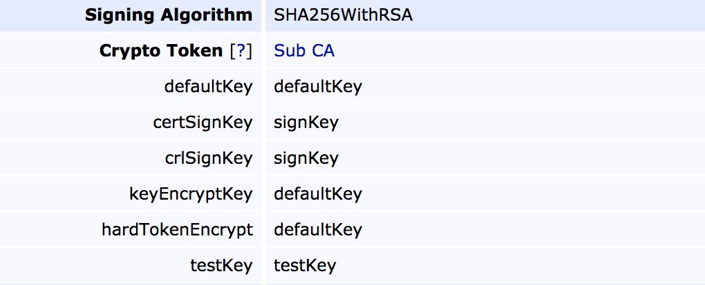
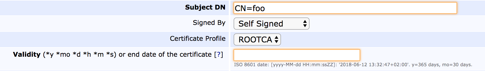
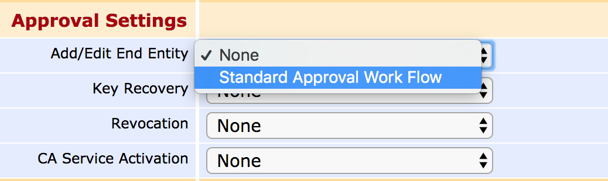
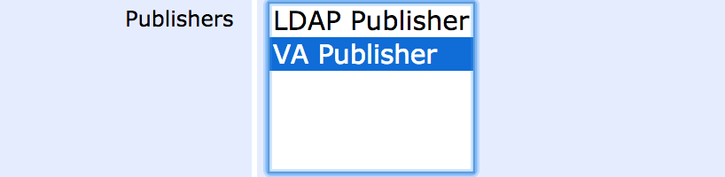
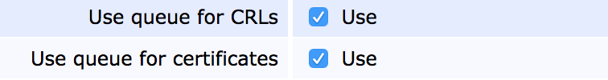
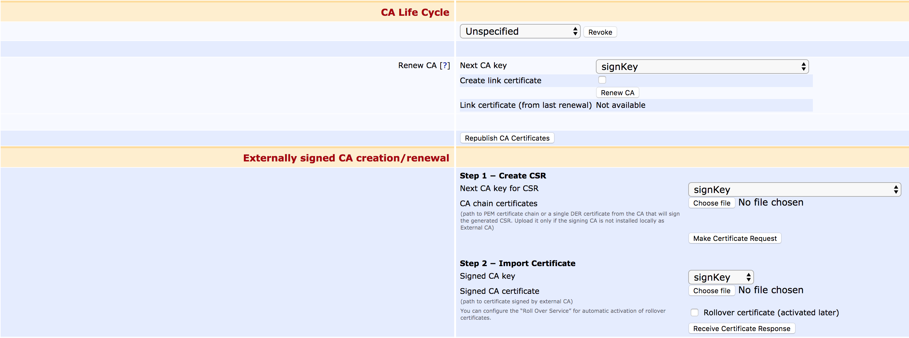

Certificate Authority Overview
A Certificate Authority (CA) instance is the basic building block of a PKI installation, and can in an instance be described as the basic building block. The primary role of a CA is to handle issuance and revocation of certificates, and secondarily to validate, publish and provide workflows for effective certificate management. If you scale it down, a CA could simply consist of a keypair and a script, but in EJBCA we try to provide far more than that.
This Certificate Authority Overview covers conceptual information on CAs in the following sections:
For more information on how to create, edit and manage CAs, see Certificate Authority Operations.
Structure
The following basic elements define a CA.
Type
The first question to take into account when creating CA is the type. EJBCA currently supports two types:
Signing Elements
Crypto Token
Crypto tokens in CA contexts have historically been called CA Tokens. While this term is purely historical, it may still be referenced in older documentation and configuration files. The two terms can be considered equivalent.
The basis of a CA will always be centered around one or more key pairs. From a CA's point of view these are stored in a crypto token and need to be signed before they can be of any use. For information on types of crypto tokens available and where the private keys are stored, see Crypto Tokens Overview.
Key Pairs
A CA is defined to use several key pairs which are mapped to a purpose. In the following example, the purpose mapping can be seen on the left while the key pair alias is on the right. Note that the same alias can be used for several mappings.

defaultKey: The key to use if no specific key is selected .
certSignKey: The key to use for certificate issuance. Must comply with the signing algorithm chosen (see below).
crlSignKey: The key to use for CRL signing. Even though it could theoretically be separate from the certSignKey according to the RFCs, client support is rare and the certSignKey will always be used.
keyEncryptKey: Key to use for key recovery (if enabled) and decrypts escrowed keys. This key pair must be RSA as EC is not capable of encryption.
hardTokenEncrypt: Deprecated functionality, do not use.
testKey: Key used by health-check to verify that the crypto token is usable. Usually a short key for speedy connection checks.
Signing Algorithm
The signing algorithm to use for issuing certificates, signing CRLs etc. The choice of algorithm must correspond to the key pair types available in the crypto token. Thus SHA256WithRSA can only be used in conjunction with RSA keys.
Certificate
The keys associated with a CA are of no use unless they've been signed, and the result of this signature is the CA Certificate. The certificate can be self-signed (a Root CA), signed by another local CA (making it a Sub CA or Intermediate CA), or signed externally (requiring the generation and signature of a CSR before the CA can be made active). Choosing a certificate profile for the CA will not affect the certificates issued by this CA, but rather the certificates for this CA.

Fields
In addition to the above, there are a number of CA-specific settings and values to configure for a CA in order to comply with various RFCs and specifications. Besides those mentioned in detail below, all CA fields are defined and described on CA Fields.
Approvals
For more information on Approvals and workflows, see Approvals Overview.
Some CA operations can be set up to require additional approvals, to allow lower lever administrators to request that certain operations be performed and to require several individuals to sanction an action. The actions that can be configured for approval are:
Adding and editing End Entities
Performing Key Recovery operations
Revoking certificates
Activating CA Services

Approvals are configured using Approval Profiles, which act as general approval workflow templates.
Publishers
For more information on existing publishers and how to configure them, see Publishers Overview.
Signing and storing certificates is often not enough, they need to be published to various locations as well.

Common Publishing Operations
Publishers can come in various shapes and sizes, but common applications for publishers are:
Publishing certificates and CRLs from the CA to a VA.
Publishing certificates into an LDAP structure.
Publishing certificates into a
Various Custom Publishers.
Publishing Queue
Certificate Authorities can be set to either direct publishing (which is instant, and which may cause the complete certificate issuance to fail if it fails in turn) or queued publishing, which is asynchronous but far more robust. Queued publishing is selected by marking a publisher to use the queue, and then setting up a Service Worker to process that queue.

Validators
For more information on validators, what they do and how to extend them, see Validators Overview.
A common requirement among Certificate Authorities is the ability to validate certificates or their contents prior to, during or after the signing process and before they're stored and published. For this reason EJBCA provides the Validator construct, where Validators can be instanced and configured based on templates and configured to have various effect on the issuance process, varying from just warning to outright rejecting the certificate being issued. Examples of validation operations are:
Checking that the size and security of submitted public keys align to predefined constraints.
Checking submitted public keys against a known black list of weak keys.
Performing online checks, such as Certificate Authority Authorization.
Validators can be created and edited in the CA UI and are chosen per CA for use.
Life Cycle
All good things come to an end, certificate validities notwithstanding. All certificates should expire within a reasonable date, if for no other reason to enforce that security fixed and updated algorithms are universally rolled out. The process of renewal is explained in detail in the CA Operations page, but let it be said that EJBCA provides full support for renewing Certificate Authority certificates and rolling those out, including the use of rollover certificates.
